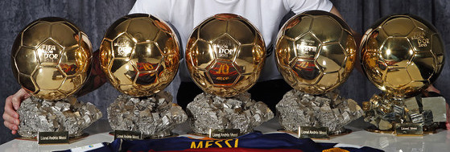

Achievements
World Year with most official titles: 2009, with 6: Copa del Rey, Liga, Champions League, Spanish Supercup, European Supercup and Clubs World Cup. European Only team to have played in every season of European competitions since they started in 1955. Team with most European trophies: 15 (4 Champions Leauges, 4 European Cup-Winners Cups, 3 Fairs Cup and 4 European Super Cups) Team with most European Cup Winners Cups: 4 (1979, 1982, 1989, 1997). Team with most Fairs Cups: 3 (1958, 1960 and 1966). Also won super final in 1971 to decide trophy outright. Team that has played most European finals: 17 (7 in European Cup / Champions League, 6 in Cup Winners Cup and 4 in Fairs Cup). Shared with Real Madrid (13 in European Cup / Champions League, 2 in Cup Winners Cup and 2 in UEFA Cup). Team with most European Cup-League doubles: 4 (1992, 2006, 2009 and 2011). Only team to reach six consecutive Champions League semi-finals: From 2007/08 to 2012/13. Most consecutive wins in European Cup / Champions League: 11, in 2002/03 Team with longest scoring run in international matches: 34 from November 24, 2009 to March 7, 2012. Spanish Only team, along with Real Madrid and Athletic Bilbao, to have always played in the First Division. Only team to have won all the official competitions it has played in at least once: since the Copa Macaya (1902) to the Clubs World Cup (2009). Spanish club with most official titles: 119. Spanish club with most official domestic titles: 63 (22 Ligas, 26 Cups, 11 Supercups, 2 Copa Eva Duarte and 2 League Cups). Spanish club with most international titles: 19 (4 Champions Leagues, 4 Cup Winners Cups, 4 Supercups, 3 Fairs Cups, 2 World Club Cups, 2 Latin Cups). Season with most titles: 1951/52, with 5: Liga, Copa, Copa Latina, Trofeo Eva Duarte and Copa Martini-Rossi. Only Spanish team to win the treble: Won the Copa del Rey, La Liga and the Champions League in the 2008/09 season. Team with most Spanish Cups: 26. Most points in La Liga: 100 points in 2012/13, to equal Real Madrid in 2011/12. Led La Liga from start to finish: In 1984/85 and 2012/13, matched with Real Madrid in 1987/88. Biggest winning margin in La Liga: 15 points ahead of 2nd placed Real Madrid in 2012/13. Longest winning period in La Liga: 16 games from game 7 to 22 in La Liga 2010/11. Team with most points and goals after the first half of La Liga: 52 points and 61 goals (17 wins, one draw and one defeat) by game 19 of La Liga 2010-11. Team with most goals scored in official competitions in a season: 2011/12, with 190 goals (114 in the league, 35 in the Champions League, 26 in the Spanish Cup, 5 in the Spanish Super Cup, 2 in the European Super Cup and 8 in the World Club Cup) in 64 games. Team with most goals scored in a calendar year in official competitions: 170 goals in 64 matches in the year 2011. Most wins in a Liga season: 32 wins in 2012/13, equalled with Real Madrid in 2011/12. Most Liga goals scored in a calendar year: 121 goals in 39 games in 2012. Most away goals in a Liga season: 52 goals in 2012/13. Most consecutive away wins: 13 games. Between September 21, 2008 and January 11, 2009, FC Barcelona got 13 consecutive away wins in official matches. There were 8 in la Liga (Sporting Gijón, Espanyol, Athletic Club, Malaga, Recreativo, Sevilla, Villarreal and Osasuna), 3 in the Champions League (Shakhtar, Basel and Sporting Lisbon) and 2 in the Copa del Rey (Benidorm and Atlético Madrid). Most consecutive wins on the road in La Liga: 10 games in la Liga 2010/11, winning away to Racing Santander, Atlético Madrid, Athletic Club, Zaragoza, Getafe, Almeria, Osasuna, Espanyol, Deportivo and Hercules. Longest run of home wins in La Liga: 39 from 16-2-1958 to 6-11-1960, scoring 159 goals and conceding 26. Most consecutive games unbeaten away from home in la Liga: 23 away games from February 14, 2010 (At. Madrid 2 Barça 1) to April 30, 2011 (Real Sociedad 2 Barça 1), with 18 wins and 5 draws. Only team in Spanish League to have won all away games in the first half of the season: In la Liga 2010/11 won away to Racing Santander, Atlético Madrid, Athletic Bilbao, Zaragoza, Getafe, Almeria, Osasuna, Espanyol and Deportivo. A total of nine games. Only team to score in all away games in a league season: 19 games in la Liga 2010/11 and 2012/13, matched by Real Madrid in 1951/52 when there were just 15 games. Biggest away win in la Liga: UD Las Palmas 0 - FC Barcelona 8 (25/10/1959) and UD Almeria 0 FC Barcelona 8 (20/11/2010). Longest scoring run in a season: 34 consecutive games in season 2009-10 (27 in Liga, 5 in Champions League and 2 in Clubs World Cup). Longest scoring run in La Liga: 63 games from 04/02/2012 to 05/10/2013, with 194 goals (at the end of 2012/13 season). Longest unbeaten run in official matches: 28 games en season 2010/11 (23 wins and five draws in 17 games in Liga, 5 in Copa and 6 in Champions League). Most wins in a season: 47 wins in a total of 64 games in official competitions in season 2011/12. Best average number of goals a game in first half of La Liga: 61 goals in 19 games at halfway stage of La Liga 2010/11 (average 3.2 per game). Longest unbeaten run away from home in La Liga: 23 games from Feb 14 2010 (At. Madrid 2 Barça 1) to April 30, 2011 (Real Societat 2 Barça 1), with 18 wins and 5 draws Most Liga points in a calendar year: 103 points in 2010 and 2012. Most goals scored in official competitions in a calendar year: 175 goals (121 in La Liga, 16 in Champions League, 24 in Copa del Rey and 4 in Spanish Supercup) in 64 games in 2012. Most consecutive match days scoring away in La Liga: 26 days (from May 1, 2010, on day 35 of Liga 2009/10 until November 6, 2011, on day 12 of Liga 2011 / 12), with a record of 18 wins, 7 draws and 1 defeats, 61 goals for and 20 against. Club records Biggest attendance at Camp Nou: 120,000 for FC Barcelona v Juventus. Quarter final of the European Cup, first leg (5/03/1986). Most consecutive Ligas: 4 (1990-91, 1991-92, 1992-93 and 1993-94). (National record: Real Madrid, 5 consecutive Ligas between 1960 and 1965 and between 1985 and 1990). Longest unbeaten run in all competitions: 28 in 2010/11 (23 wins and 5 draws in League, Cup and Champions League). Longest unbeaten run in la Liga from first game: 21 first games of La Liga 2009/10, with 17 wins and 4 draws. (National record: Real Sociedad, 32 games unbeaten in la Liga 1979/80). Longest unbeaten run in la Liga: 31 games from 3rd to 33rd of La Liga 2010-11 (national record: 32 games by Real Sociedad in la Liga 1979-80). Most points in second half of La Liga: 50 points in la Liga 2009/10 (national record: Real Madrid, 52 points in second half of La Liga 2009/10). Liga with most goals scored: 2011/12, with 114 goals in 38 games. (National record: Real Madrid, 121 goals in la Liga 2011/12). Best goals per game average in La Luga: 3,2 goals a game in the 1958/59 season (96 goals in 30 games). National record – Athletic Bilbao with 4.05 goals in the 1930/31 season with 73 goals in 18 games. Liga with most goals scored at home: 2011/12, with 73 goals. (National record: Real Madrid, 78 goals in la Liga 1989/90). Liga with Least goals conceded: 1968-69, with 18 goals in 30 games. (National record: Real Madrid, 15 goals conceded in 18 games in la Liga 1931/32). The longest run of consecutive matches without conceding a goal: 32 matches, 2011/12 season (19 in the Liga, 5 in the Champions League, 5 in the Cup, 2 in the Club World Cup and 1 in the European Super Cup). Longest unbeaten home run in la Liga: From game 25 of 72-73 (4-3-1973) to game 21 of 76-77 (20-2-1977), a total of 67 games played, with 55 wins and 12 draws, 155 goals for and 37 against. First half of La Liga unbeaten: 19 games of La Liga 2009-10 (15 wins and 4 draws). Most home wins in a Liga season: 19 wins, 2 draws and 1 defeat in la Liga 1986/87. Most away wins in a La Liga season: 14 games in the 2010/11 season (14 wins, 4 draws and one defeat in 19 games). National record -16 wins in the 2011/12 season by Real Madrid) Liga with most points: 99 points in the 2009/10 season. National record - Real Madrid in the 2011/12 season. Most wins in a La Liga season: 31 wins in the 2009/10 season. National record – Real Madrid with 32 wins in the 2011/12 season. Best goal average in a La Liga season: +85 in the 2011/12 season. National record -+89 in the 2011/12 season. Team with most away points in a La Liga season: 46 in the 2010/11 season, with 14 wins, 4 draws and one defeat. (National record: Real Madrid, 121 goals in la Liga 2011/12). Liga with fewest defeats: Only one defeat in la Liga 2009/10 (in game 22 with Atlético Madrid by 2-1). National record: Athletic Club and Real Madrid unbeaten in Ligas 1929/30 and 1931/32 respectively. Longest scoring run in la Liga: 36 games between the ninth of 1942/43 (22-11-1942) and the 18th of 1943/44 (6-2-1944). Longest scoring run in la Liga at home: 88 games between game 22 of la 1951/52 (02/10/1952) and the 18th of 1957/58 (01/19/1958). Longest scoring run in all competitions: 36 games between the ninth of 1942/43 (22/11-1942) and the 18th of 1943/44 (6-2-1944) and 8 Cup games in 1942/43. 44 games in 139 games (106 in La Liga and 33 in the Cup) Team with most away goals scored: 49 goals in the 2010/11 season(National Record, Real Madrid in 2011/12) Biggest home win in la Liga: FC Barcelona 10 - Gimnàstic Tarragona 1 (11/09/1949). Biggest win in the Cup: FC Barcelona 10 - Basconia 1 (08/04/1962). Biggest win in any competition: Copa Macaya: Tarragona 0 - FC Barcelona 18 (03/17/1901). Biggest win in friendly: Smilde (Holland) 1 - FC Barcelona 20 (6-8-1992). Longest run of consecutive wins in games in official competitions: 18 games in season 2005/06 (13 in Liga, 3 in Champions League and 2 in Copa del Rey) between 22/10/2005 and 22/1/2006. Longest run of games unbeaten in European competitions: 17 games, between seasons 1988/89 and 1992/93 and also between seasons 2005/06 and 2006/07. Biggest home wins in European competitions: FC Barcelona 8 - Apollon Limassol (Cyprus) 0 (European Cup Winners Cup, 15/09/1982); FC Barcelona 8 - Matador Púchov (Slovakia) 0 (UEFA Cup. 15/10/2003). Biggest away win in European competitions: Hapoel Beer Sheva (Israel) 0 - FC Barcelona 7 (UEFA Cup. 12/9/1995). Biggest win in European Cup/Champions League: FC Barcelona 7 – Bayer Leverkusen 1 (first leg of Champions League Last 16 2011/12, 07/03/2012). Biggest away win in Champions League: Basle 0 -FC Barcelona 5 (22/10/2008) BATE 0 FC Barcelona 5 (28/09/2011). Longest scoring run in Champions League: 29 games from November 24, 2009 to March 7, 2012.